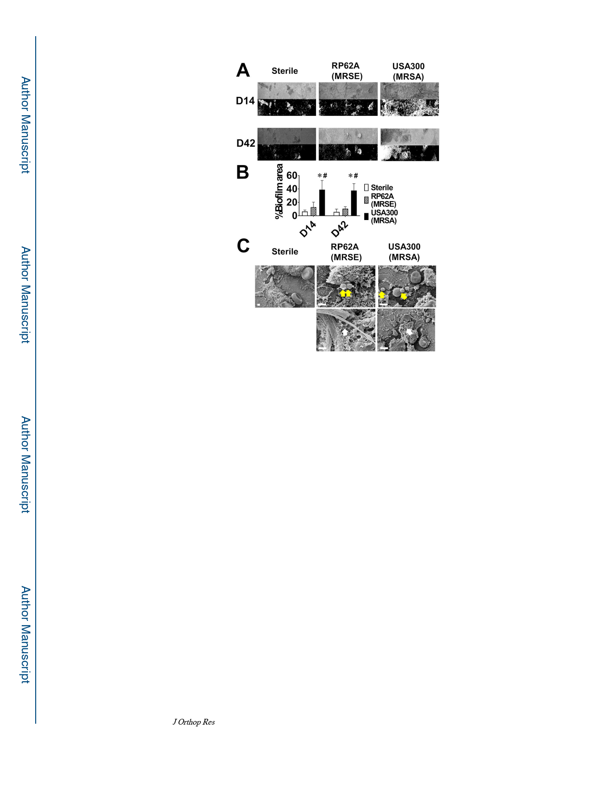

Tomizawa et al.
Page 17
Figure 5. Lack of biofilm on explants from RP62A infected tibiae.
Mice (n=5) were challenged with a transtibial implant containing no bacteria (Sterile),
1.6×105 CFU of RP62A, or 2.1×105 CFU of USA300, euthanized on day 14 or 42 post-op,
and the implants were process for scanning electron microscopy (SEM) to assess biofilm
formation. (A) Representative SEM images of the region of interest (ROI) at x100 (top
panel) are shown with the ImageJ rendering of the biofilm (lower panel), to illustrate the
similarity between the Sterile and RP62A groups, in contrast to the great amount of biofilm
formed on the USA300 infected implants. (B) The % of ROI surface area covered with
biofilm was quantified with ImageJ, and the data are presented as the mean ± SD (*p<0.05
vs. Sterile; #p<0.05 vs. RP62A). Of note is that there were no significant differences
between the Sterile and RP62A groups, or day 14 vs. 42. (C) High power SEM images are
shown at x5,000 in Sterile and x15,000 in RP62A and USA300 to illustrate that the only
matter observed on Sterile implants was red blood cells and host material. In contrast, cocci
(yellow arrows) and empty lacunae (white arrows) were present in RP62A and USA300
biofilm.
J Orthop Res. Author manuscript; available in PMC 2021 April 01.